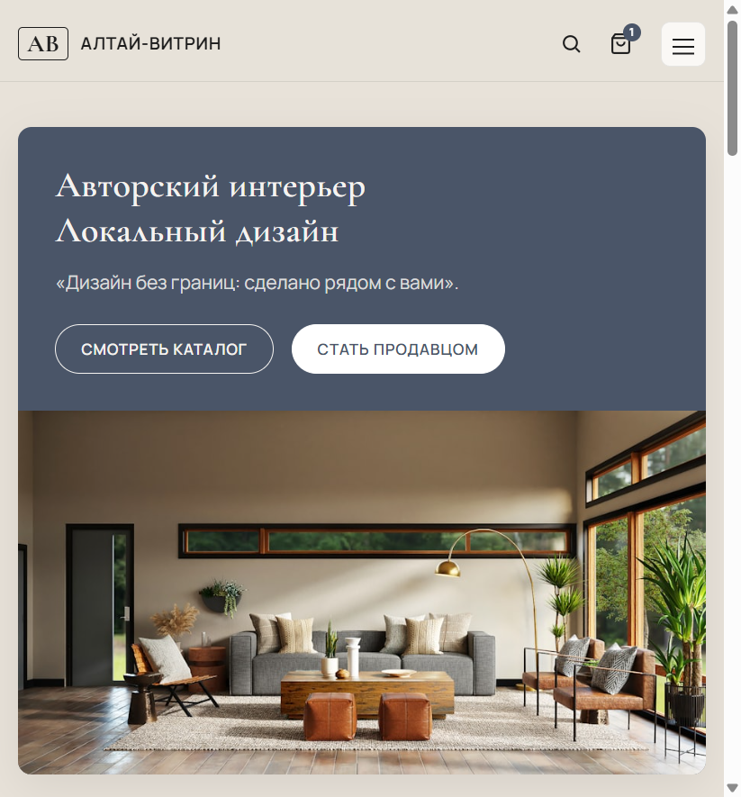
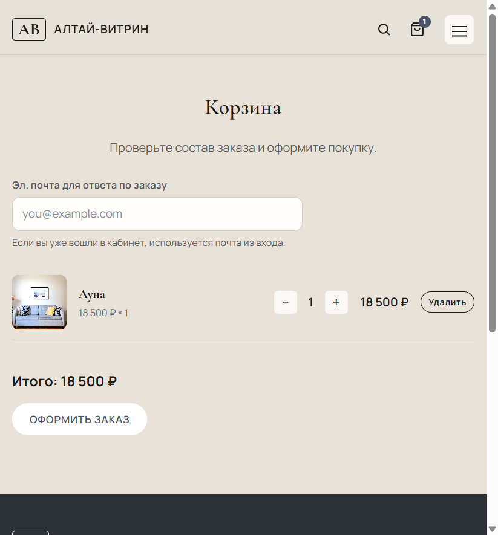

Рисунок 1.2 – Каталог товаров с разделами-комнатами
Бизнес-план ООО «Алтай-Витрин» (altdi.ru). Версия по замечаниям научрука. Печать: Ctrl+P → A4.
Таблица Р.1 – Резюме проекта
| Наименование | Описание |
|---|---|
| Организация | ООО «Алтай-Витрин», г. Барнаул |
| Суть | Витрина авторского декора altdi.ru + логистика и хранение оператора |
| Продукт | Товары дизайнеров и услуги размещения; сайт — канал |
| Доход | 8 % комиссия; аренда полки от 1 суток |
| Цель | 50 дизайнеров; 250 SKU; 60 заказов/мес.; чек 4 800 руб. |
| Персонал | 3 чел.; УСН 6 % |
Вывод: проект реализуем при фокусе на локальных авторах и сервисе оператора.
Проект ООО «Алтай-Витрин» работает в сегменте розничной e-commerce (ОКВЭД 47.91.2) и креативных индустрий Алтайского края. Рынок смещается от массовых маркетплейсов к нишевым витринам: часть мастеров уходит с площадок с высокой комиссией, что подтверждается отраслевыми обзорами handmade-сегмента (2024–2026).
Вывод: ниша локального кураторского декора в крае недонасыщена комплексным оператором.
Продукт — совокупность физических изделий (декор, текстиль, керамика, свет, подарки) и услуг оператора: размещение на цифровой полке, модерация, приёмка на склад, упаковка, доставка, расчёты с авторами, гарантия целостности при хранении и передаче перевозчику.
Сайт altdi.ru — канал продаж, а не сам продукт. Реализация: Node.js, SQLite; валюта — рубль; запуск — 2026 г.
Модель «полок»: высота (верх / середина / низ) и ширина слота (1 / 2 / 4 места в ряду); аренда от 1 суток; комиссия 8 % (таблица 1.4).

Рисунок 1.1 – Главная страница витрины altdi.ru
Рисунок 1.2 – Каталог товаров с разделами-комнатами
Таблица 1.4 – Тарифы ООО «Алтай-Витрин» (руб.)
| Услуга | Условие | Ставка |
|---|---|---|
| Комиссия | % с продажи | 8 % |
| Полка, низ, узкий | руб./сутки | 79 |
| Полка, середина, стандарт | руб./сутки | 179 |
| Полка, верх, широкий | руб./сутки | 349 |
| Комбо верх+широкий | руб./сутки | 449 |
| Хранение SKU | до 45³ см / мес. | 390 |
| Упаковка заказа | за отправление | 149 |
Вывод: тарифы ниже совокупной комиссии крупных агрегаторов и сопоставимы с арендой места в локальном шоуруме.
На платформе выделены роли: покупатель, продавец (дизайнер), администратор.
Покупатель: вход на altdi.ru → каталог / «комнаты» → карточка товара → корзина → оформление заказа → оплата → статус «в обработке» → сборка на складе → доставка СДЭК/Почта → получение.
Продавец: регистрация → кабинет → добавление товара → модерация → оплата полки (от 1 сут.) → публикация → уведомление о заказе → передача товара на склад (или отгрузка по договору) → выплата за вычетом 8 %.

Рисунок 1.3 – Корзина и оформление заказа на altdi.ru
Вывод: сценарии фиксируют прозрачный путь денег, товара и ответственности оператора.
Бизнес-модель представлена на рисунке 1.0 (заменяет упрощённую таблицу).
Рисунок 1.0 – Бизнес-модель ООО «Алтай-Витрин» (канва А. Остервальдера и И. Пинье)
| Ключевые партнёры | Ключевые виды деятельности | Ценностное предложение | Взаимоотношения с клиентами | Потребительские сегменты | |
|---|---|---|---|---|---|
| Дизайнеры и мастерские; СДЭК и Почта России; арендодатель склада; банк и эквайринг; VK; типография; ААГ | Разработка altdi.ru; модерация; привлечение авторов; приёмка, хранение, упаковка; доставка; расчёты; маркетинг | Покупателю: локальный кураторский декор, единый заказ, доставка, гарантия целостности на складе. Дизайнеру: продажи без своего магазина, полки от 1 суток, комиссия 8 %, логистика оператора |
Онлайн-поддержка; статусы заказа; подборки; ЛК продавца; прозрачные выплаты | B2C: жители края 20–50 лет. B2B: дизайнеры, кафе, студии |
|
| Ключевые ресурсы: сайт, склад, бренд, команда, договоры, база клиентов | Каналы: altdi.ru, VK, Telegram, ярмарки, B2B | ||||
| Структура издержек | Потоки поступления доходов | ||||
| ИТ, аренда склада, упаковка, доставка, ФОТ, реклама, налоги, эквайринг, юрсопровождение | 8 % комиссия; аренда полок; хранение; упаковка; оформление карточек; платное продвижение | ||||
Вывод: модель показывает разделение ценности для покупателя и дизайнера при монетизации через комиссию и аренду полок.

Рисунок 1.0а – Схема бизнес-модели (для приложения — цветная канва)
При необходимости заменить на экспорт канвы из шаблона Остервальдера.
Рынок — Алтайский край и соседние регионы. Опрос покупателей: Google Формы, n=50, март 2026.
Рисунок 2.1 – Доля ответов: интерес к товарам дизайнеров Алтая
Вывод: на основе опроса покупателей (таблица 2.5).
Приемлемая цена авторского декора (опрос, %)
Рисунок 2.2 – Приемлемая цена авторского декора (опрос, %)
Вывод: диаграмма иллюстрирует распределение ответов (n=50, март 2026 г.).
Готовность заказать на локальной витрине (%, n=50)
Рисунок 2.3 – Готовность заказать на локальной витрине (%, n=50)
Вывод: диаграмма иллюстрирует распределение ответов (n=50, март 2026 г.).
Таблица 2.5 – Результаты опроса (фрагмент)
| Вопрос | Варианты | % |
|---|---|---|
| Покупали декор онлайн за год | Да / Нет | 64 / 36 |
| Интересны товары дизайнеров Алтая | Да / Скорее да / Нет | 42 / 38 / 20 |
| Готовы заказать на altdi.ru | Да / Возможно / Нет | 52 / 34 / 14 |
Вывод: три графика и таблица согласуются: ядро ЦА — средний чек 1 500–5 000 руб., готовность к локальной витрине выше 50 %.
Продукт: кураторский ассортимент, полки, гарантия на складе. Цена: 8 % + полка. Сбыт: altdi.ru, VK, ярмарки. Продвижение: VK-реклама, SEO, сарафанное радио; бюджет до 500 000 руб./год.
Вывод: комплекс согласован с нишевым позиционированием.
Продуктовый маркетинг включает: (1) ассортиментную матрицу — декор, текстиль, керамика, свет; (2) качество карточки — фото, история автора, «комната»; (3) жизненный цикл полки — напоминание за 24 ч до окончания аренды; (4) упаковку и unboxing — фирменная коробка оператора.
Рисунок 3.1 – Карточка товара: фото, описание, автор

Рисунок 3.2 – Раздел «Полки» — тарификация видимости
Локально: polki.html в корне проекта.
Вывод: продуктовый маркетинг опирается на визуальную дифференциацию и понятные правила полок.
Используются анкетирование (n=50) и холл-тест знака/слогана (n=36). Глубинные интервью не проводились.
Таблица 3.1 – Маркетинговые исследования
| Цель | Метод | n | Вывод |
|---|---|---|---|
| Спрос покупателей | Анкетирование (Google Формы) | 50 | 58 % готовы к чеку 1 500–5 000 руб. |
| Знак и слоган | Холл-тест | 36 | Лучше: знак AB + altdi.ru; слоган про «полку» |
Вывод: данные опроса — в таблице 2.5 и на рисунках 2.1–2.3.
Сравниваются нишевые игроки (без Ozon, Wildberries, Avito): «Ярмарка Мастеров» (онлайн-площадка авторов); Livemaster (маркетплейс мастеров); ИП «ДекорБарнаул» (региональный магазин декора); Сообщество VK «Handmade Алтай» (соцсеть).
Таблица 3.3а – Сравнительная характеристика конкурентов (не крупные федеральные маркетплейсы)
| Показатель | «Ярмарка Мастеров» (онлайн-площадка авторов) | Livemaster (маркетплейс мастеров) | ИП «ДекорБарнаул» (региональный магазин декора) | Сообщество VK «Handmade Алтай» (соцсеть) | ООО «Алтай-Витрин» |
|---|---|---|---|---|---|
| Сайт / канал | livemaster.ru / yarmarka-masterov.ru | livemaster.ru | декор-барнаул.рф (условно) | vk.com (сообщество мастеров) | altdi.ru |
| Тип площадки | Специализированная handmade-площадка | Площадка авторских изделий | Локальный интернет-магазин | Социальная витрина без оператора | Витринно-логистическая платформа |
| Комиссия / монетизация | 10–15 % | от 8 % + услуги | наценка ритейлера | 0 % (свои продажи) | 8 % + полка от 79 руб./сут. |
| Размещение / «полка» | абонент / продвижение | платные витрины | витрина магазина | бесплатно | цифровая полка, от 1 сут. |
| Логистика | силами мастера | силами мастера | самовывоз / доставка по городу | договорённости в ЛС | склад оператора, СДЭК / Почта России |
| Цена min, руб. | 500 | 400 | 800 | 300 | 1 200 |
| Цена max, руб. | 28000 | 25000 | 15000 | 12000 | 18 500 |
| Средний чек, руб. | 3 500–7 500 | 2 800–6 500 | 2 500–5 500 | 1 500–4 000 | 4 800 (цель) |
| Локальный акцент | слабая | слабая | сильная | очень сильная | очень сильная (Алтайский край) |
Вывод: нишевые и региональные игроки слабее в комплексной логистике; преимущество Алтай-Витрин — склад, гарантия целостности и кураторство при комиссии ниже агрегаторов handmade.

Рисунок 3.4 – Конкурент: Livemaster — главная страница

Рисунок 3.5 – Конкурент: Ярмарка Мастеров

Рисунок 3.6 – Конкурент: региональный магазин декора (пример)

Рисунок 3.7 – Конкурент: сообщество VK Handmade Алтай
Таблица 3.2 – Лист оценки конкурентоспособности (1–10)
| Факторы | Алтай-Витрин | «Ярмарка Мастеров» (онлайн-площадка авторов) | Livemaster (маркетплейс мастеров) | ИП «ДекорБарнаул» (региональный магазин декора) | Сообщество VK «Handmade Алтай» (соцсеть) |
|---|---|---|---|---|---|
| Продукт | |||||
| 1.1 Надёжность | 7 | 6 | 6 | 6 | 5 |
| 1.2 Стиль | 9 | 7 | 6 | 6 | 4 |
| 1.3 Гарантии | 7 | 6 | 6 | 6 | 5 |
| 1.4 Ассортимент | 4 | 7 | 6 | 6 | 5 |
| Цена | |||||
| 2.1 Гибкость | 7 | 6 | 6 | 7 | 8 |
| 2.2 Расчёты | 8 | 7 | 7 | 7 | 5 |
| Место | |||||
| 3.1 Канал | 7 | 8 | 7 | 7 | 6 |
| 3.2 Охват | 6 | 7 | 7 | 8 | 9 |
| Продвижение | |||||
| 4.1 Реклама | 6 | 6 | 6 | 5 | 5 |
| 4.2 Бюджет | 4 | 5 | 5 | 4 | 3 |
| 4.3 Офлайн | 8 | 7 | 7 | 6 | 7 |
Вывод: проект выигрывает в стиле, локальности и офлайн-присутствии.
Таблица 3.5 – SWOT
| Сильные | Слабые |
|---|---|
| Локальность, полки, склад, команда | Малый бренд, ограниченный бюджет |
| Возможности | Угрозы |
| Рост спроса на локальное; B2B; партнёрства с ААГ; уход части продавцов с крупных маркетплейсов из-за роста комиссий (15–25 %) и переток мастеров в нишевые витрины | Конкуренция соцсетей; рост стоимости рекламы |
Вывод: возможность — занять нишу «оператор для мастеров», отказавшихся от федеральных агрегаторов.
Таблица 3.7 – У кого что закупаем (поставщики услуг и товара)
| Категория | Поставщик | Закупаем | Цена | Доказательство |
|---|---|---|---|---|
| Товар | Дизайнеры и мастерские Алтайского края | Готовые изделия на реализацию | Розница автора −8 % комиссии | Договор комиссии, акт приёмки (прил. Д) |
| Логистика | СДЭК | Доставка B2C по краю и РФ | от 290 руб. (посылка до 3 кг, Барнаул–Новосибирск, 2026) | Скрин тарифа на cdek.ru (рис. 3.15) |
| Логистика | Почта России | Доставка в отдалённые НП | от 350 руб. (1 класс, 2 кг) | Скрин калькулятора pochta.ru (рис. 3.16) |
| Упаковка | ООО «Алтай-Пак», г. Барнаул | Короба, наполнитель, скотч | короб 30×30×30 — 65 руб.; наполнитель — 120 руб./уп. | Коммерческое предложение / прайс (рис. 3.17) |
| Услуги | Типография «Принт-Алтай» | Визитки, листовки, QR-наклейки | листовка А6 — 8 руб.; тираж 500 шт. | Прайс типографии (рис. 3.18) |
| Инфраструктура | Арендодатель склада | Помещение 40–60 м² | 45 000–55 000 руб./мес. | Объявление/договор аренды (рис. 3.19) |
| Финансы | Банк (эквайринг) | Приём оплаты картой | 2,2–2,8 % с оборота | Тарифы банка на сайте (рис. 3.20) |
| Реклама | VK Реклама | Таргет, посевы | CPC от 8–15 руб. (ниша декор) | Скрин кабинета / медиаплан (рис. 3.21) |
Вывод: каждая статья расходов привязана к контрагенту и подтверждается скриншотом/прайсом в приложении.

Рисунок 3.15 – Калькулятор СДЭК: расчёт доставки

Рисунок 3.16 – Почта России: расчёт посылки

Рисунок 3.17 – Прайс упаковочных материалов

Рисунок 3.18 – Прайс типографии (листовки, визитки)

Рисунок 3.19 – Аренда склада / помещения (объявление)

Рисунок 3.20 – Тарифы эквайринга банка

Рисунок 3.21 – VK Реклама: ориентиры ставок
Проект реализуется в форме ООО «Алтай-Витрин», поскольку предполагается работа с несколькими контрагентами (дизайнеры, службы доставки, арендодатель), подключение эквайринга и развитие бренда витрины. ФИО учредителей и доли в уставном капитале уточняются при оформлении учредительных документов; рекомендуемая стартовая модель — три участника с распределением функций: ИТ-разработка, дизайн/маркетинг контента, финансы и учёт.
Юридический адрес размещается в населённом пункте фактического присутствия организации (офис/склад) с соблюдением требований достоверности адреса. ОКВЭД2: основной код 47.91.2; дополнительно — 63.12 (web-порталы), 52.10 (хранение), 82.92 (упаковка), 73.11 (реклама), 74.10 (дизайн) — по фактическому перечню услуг.
Организационная структура на запуске может быть описана как линейно-функциональная: единый руководитель и функциональные блоки (ИТ, маркетинг и визуальная коммуникация, финансы, операции). Часть ролей на первом этапе совмещается учредителями. На рисунке 4.1 приведена схема организационной структуры управления проектом: в ней отражены подчинение руководителю четырёх внутренних направлений и связь с блоком внешних партнёров.
Рисунок 4.1 – Организационная структура управления проектом
В соответствии с рисунком 4.1 состав подразделений и их функции распределяются следующим образом. ИТ-направление обеспечивает разработку, сопровождение и безопасность веб-платформы. Дизайн и маркетинг отвечают за визуальную концепцию витрины, качество карточек, рекламные коммуникации и работу с авторами. Финансы и бухгалтерия ведут учёт, налоговый режим, расчёты с контрагентами и управленческую отчётность. Операционное направление (по мере роста) концентрирует приёмку товара на склад, упаковку, взаимодействие со службами доставки и обработку возвратов. Потребность в кадрах сведена в таблице 4.1.
Таблица 4.1 – Потребность в кадрах управления и ведущих специалистах
| Персонал (группы) | Потребность: специальность, образование, количество | Источники найма |
|---|---|---|
| Управление | Руководитель проекта — 1 чел.; компетенции в продажах, договорах и операционном контроле | Учредитель; при росте — найм |
| Финансы и бухгалтерия | Бухгалтер — 1 чел.; профильное образование, знание УСН и учёта комиссионной модели | Учредитель / аутсорсинг бухгалтерии |
| Маркетинг | Контент и продвижение — 0,5–1 ставка | Совмещение с дизайнером; позже приём |
| Юридическое обслуживание | Договоры, оферта, ПДн — разовые консультации | Аутсорсинг |
| Производство / операции | Менеджер заказов / склад — 1 чел. при росте объёма отгрузок | Приём извне |
| ИТ | Разработчик веб-платформы — 1 чел. | Учредитель / штат при масштабировании |
Расчёт фонда заработной платы приведён в таблице 4.2. Вывод по кадрам: минимальная команда запуска — три ключевые роли (ИТ, дизайн/маркетинг, бухгалтерия), с последующим выделением операционного сотрудника.
Функциональные обязанности. Руководитель — стратегия, ключевые партнёрства и контроль показателей. ИТ-специалист — жизненный цикл кода, доступы, резервное копирование данных, инциденты. Дизайнер/маркетолог — гайдлайны карточек, рекламные материалы, коммуникации. Бухгалтер — первичка, налоги, выплаты дизайнерам. Операционный сотрудник — физическая логистика и клиентская поддержка по заказу.
Создаваемые рабочие места: на старте — 3 постоянных места в составе команды; +1 место при выходе на устойчивый поток заказов, требующий отдельного операционного сотрудника.
Таблица 4.2 – Расчёт фонда заработной платы (иллюстративно, руб./мес.)
| № п/п | Категория | Кол-во | Оклад, руб. | Фонд, руб. | Страховые взносы (ориентир 30 %) | Всего в мес., руб. | В год, руб. |
|---|---|---|---|---|---|---|---|
| 1 | Бухгалтер | 1 | 30 000 | 30 000 | 9 000 | 39 000 | 468 000 |
| 2 | ИТ-специалист | 1 | 35 000 | 35 000 | 10 500 | 45 500 | 546 000 |
| 3 | Дизайнер / маркетинг | 1 | 30 000 | 30 000 | 9 000 | 39 000 | 468 000 |
| Итого по таблице | 123 500 | 1 482 000 | |||||
Календарный график реализации проекта — в таблице 4.3.
Примечание: тариф страховых взносов и льготы для субъектов МСП необходимо уточнить по законодательству на дату выплаты зарплаты; на ранней стадии возможна работа учредителей без полной рыночной зарплаты.
Таблица 4.3 – Календарный график реализации проекта (фрагмент, 2026 г.)
| Наименование этапа | Янв. | Фев. | Мар. | Апр. | Май | Июн. |
|---|---|---|---|---|---|---|
| Регистрация ООО, расчётный счёт, ЭЦП | 1 | 1 | ||||
| Разработка и тестирование веб-витрины (MVP) | 1 | 1 | 1 | |||
| Договорная база, оферта, политика ПДн | 1 | 1 | ||||
| Подключение эквайринга и онлайн-кассы | 1 | 1 | ||||
| Онбординг местных дизайнеров, наполнение каталога | 1 | 1 | 1 | |||
| Рекламная кампания (VK, сайт, сарафанное радио) | 1 | 1 | 1 | 1 | ||
| Пилотные продажи и доработка процессов | 1 | 1 | ||||
| Выход на режим регулярной деятельности | 1 | 1 |
График работы. Сайт доступен круглосуточно. Обработка заказов, консультации и отгрузки — в рабочие дни (например, 10:00–19:00), с расширением в пики спроса.
Режим налогообложения. На старте целесообразно рассмотреть УСН «доходы» со ставкой 6 % при преобладании комиссионной и сервисной выручки и относительно простом учёте; при росте доли подтверждаемых расходов выполняется сравнение с объектом «доходы минус расходы».
Вывод по организационному плану: выбранная форма ООО и линейно-функциональная структура, представленная на рисунке 4.1, согласуются с многоконтрактной моделью витрины. Критический путь запуска проходит через регистрацию юридического лица, готовность веб-платформы, договорную базу и подключение платёжных сервисов, после чего основное внимание переключается на привлечение продавцов и покупательский спрос.